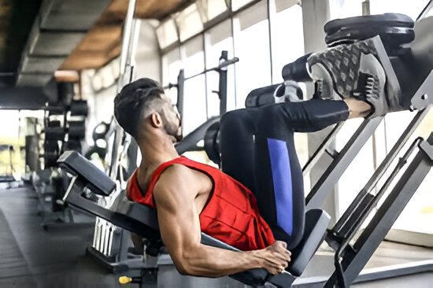

¿Quieres rutina personalizada?
Click aquí


Mejorar la salud cardiovascular, ayudar a controlar el peso, fortalecer los músculos y los huesos, mejorar la salud mental al liberar endorfinas, aumentar los niveles de energía y la calidad del sueño, así como reducir el riesgo de enfermedades crónicas como diabetes, algunos tipos de cáncer y afecciones neurodegenerativas. En conjunto, el ejercicio regular es fundamental para mantener una buena salud integral a lo largo del tiempo.
Una rutina de ejercicios de 10 minutos diseñada para ayudarte a quemar grasa y perder peso. Se trata de un entrenamiento HIIT (High-Intensity Interval Training) que combina cinco ejercicios diferentes realizados en cuatro rondas. Cada ronda consiste en 25 segundos de trabajo seguidos de 5 segundos de descanso.
Este video de Fausto Murillo presenta una rutina express de abdominales para fortalecer y quemar grasas. La rutina es adecuada para personas que no tienen mucho tiempo y se puede realizar en casa.
En este video, Chuy Almada guía a los espectadores a través de una rutina de ejercicios abdominales. Enfatiza que esta no será una rutina fácil y requerirá mucho esfuerzo. Sin embargo, promete que los resultados valdrán la pena.

Consejo 1
establecer rutina de ejercicios: es importante que establezcas rutinas de ejercicio en donde estas tomen tu tiempo para que te vuelvas mas dedicado en ello.
Consejo 2
Evita distracciones: las distracciones pueden hacer que te distraigas de tus rutinas intenta hacer ejercicio cuando no haya nadie en casa o cuando tu lista de tareas este casi vacía.
Consejo 3
Hidratación:el mantenerte hidratado es importante y lo es mas aun cuando te ejercitas por que pierdes demasiado liquido del cuerpo no te conformes con un vaso al día.
Consejo 4
Dieta saludable: tu cuerpo se siente bien mientras haces ejercicio pero cada persona tiene que hacer una dieta conforme su peso y su objetivo en el ejercicio puedes buscar mas opciones para tu alimentación diaria.